jQuery一直是前台开发者的钟爱，利用jQuery提升用户体验已成为几乎最好的方案。下面是10个精选的jQuery插件，它们能够为你的用户创造更好的体验效果，同时也让你的编码充满乐趣。
jQuery Collapse
jQuery Collapse是一个提供网页内容显隐方案的插件，支持包括cookies在内的多种内容显示/隐藏控制方式。 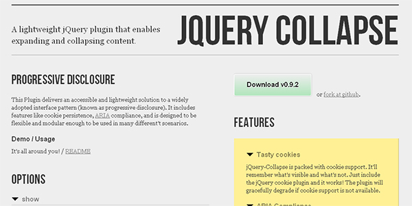
{kind=link}
Font.js
Font.js是一个将字体抽象作为单独对象来处理的插件，它提供了类似其它网页元素的控制手段，帮助你在编码时方便的处理字体变化。 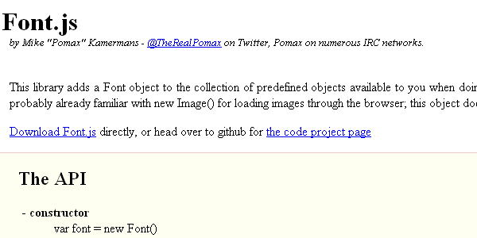
{kind=link}
EaselJS
EaselJS是一个canvas的抽象层，它为熟悉Flash的用户提供了一个接口，能让其更快的熟悉和使用canvas。 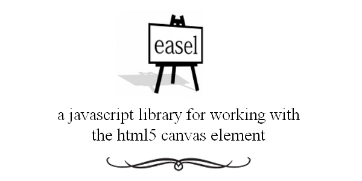
{kind=link}
Hovercard.js
Hovercard.js是一个类似于tooltips的辅助插件，当用户的鼠标覆盖住元素的时候，就是它发挥作用的时候。 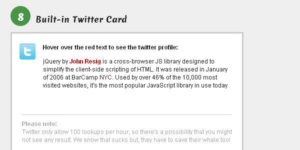
注意，它的演示页面所用脚本来自于dropbox，部分地区网络可能无法顺利显示
{kind=link}
jRumble
jRumble是一个能让网页元素在鼠标覆盖时作出晃动响应的插件，如果你需要你的页面摇滚起来，那这将是一个非常不错的选择。 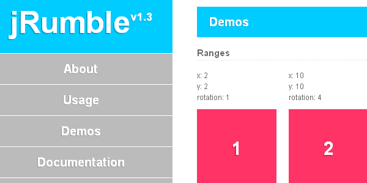
{kind=link}
jQuery News Ticker
jQuery News Ticker是一个用于滚动播放新闻、通知的插件，它受启发于BBC的网站通知。 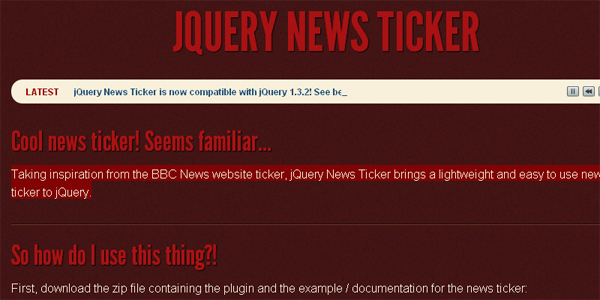
{kind=link}
In-Field Labels jQuery Plugin
In-Field Labels jQuery Plugin是一个能够将表单中标签放置于输入框内的插件，它能够十分有效地节省网页空间。 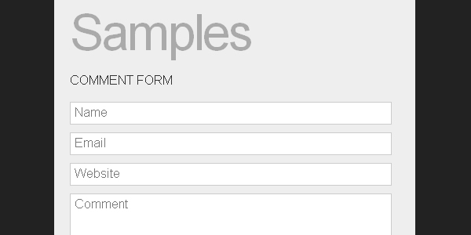
{kind=link}
js Message
js Message是一个高度可定制的消息通知系统插件，它能够以多种方式向用户提供消息通知，界面非常友好。

Sisyphus.js
Sisyphus.js是一个客户端本地的自动表单存储插件，当你想向用户提供一个自动保存功能时，倒不如先考虑考虑它。 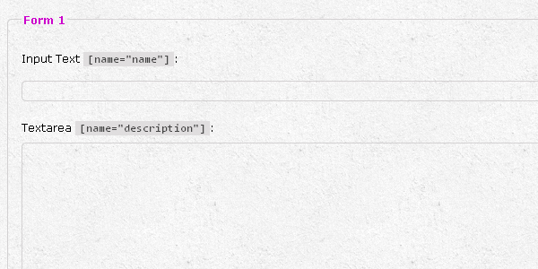
{kind=link}
List.js
List.js是一个用于优化列表元素的插件，它能够为列表提供排序、搜索等功能，并且完全跨浏览器。 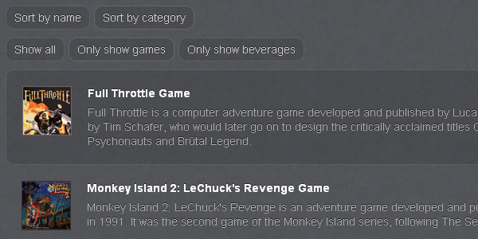
{kind=link}
Response.js
Response.js为你提供一个环境适应的资源下载功能，它能够针对不同的屏幕大小下载不同的JS文件、CSS文件或图片文件，同时只对HTML作出细微的变更。 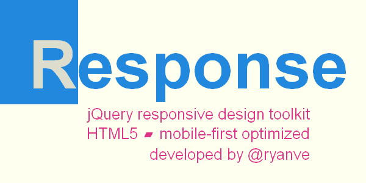
{kind=link}
Sticky
Sticky是一个专门用于制作固顶元素的插件。 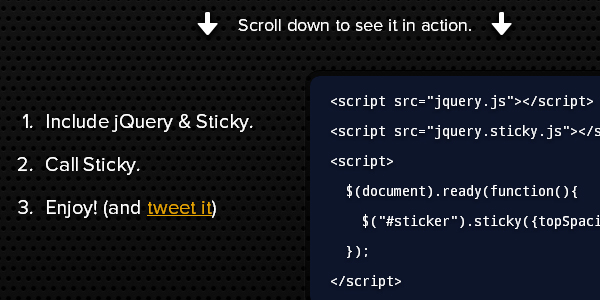
{kind=link}